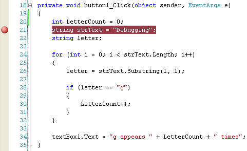
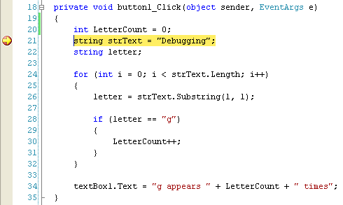
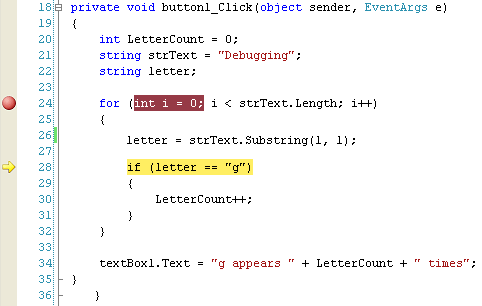
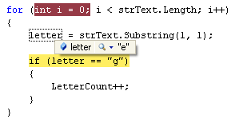
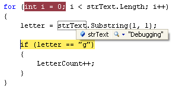
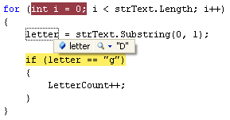

Breakpoints in C# .NET
<< Continues from the previous lesson
The first debugging tool we'll look at is the Breakpoint. This is where you tell C# to halt your code, so that you can examine what is in your variables. They are easy enough to add.
To add a Breakpoint, all you need to do is to click in the margins to the left of a line of code:

In the image above, we clicked in the margins, just to the left of line 21. A reddish circle appears. Notice too that the code on the line itself gets highlighted.
To see what a breakpoint does, run your programme and then click your button.
C# will display your code:

There will be a yellow arrow on top of your red circle, and the line of code will now be highlighted in yellow. (If you want to enable line numbers in your own code, click Tools > Options from the C# menus at the top. On the Options box, click the plus symbol next to Text Editor, then C#. Click on General. On the right hand side, check the box for Line Numbers, under the Display heading.)
Press F10 on your keyboard and the yellow arrow will jump down one line. Keep
pressing F10 until line 28 in your code is highlighted in yellow, as in the
image below:

Move your mouse pointer over the letter variable and C# will show you what is currently in this variable:

Now hold your mouse over strText to see what is in this variable:

Although we haven't yet mentioned anything about the Substring method, what it does is to grab characters from text. The first 1 in between the round brackets means start at letter 1 in the text; the second 1 means grab 1 character. Starting at letter 1, and grabbing 1 character from the word Debugging, will get you the letter "D". At least, that's what we hoped would happen!
Unfortunately, it's grabbing the letter "e", and not the letter "D". The problem is that the Substring method starts counting from zero, and not 1.
Halt your programme and return to the code. Change your Substring line to this:
letter = strText.Substring(0, 1);
So type a zero as the first number of Substring instead of a 1. Now run your code again:

This time, the correct letter is in the variable. Halt your programme again. Click your Breakpoint and it will disappear. Run the programme once more and it will run as it should, without breaking.
So have we solved the problem? Is the programme counting the letter g's correctly?
No! The letter count is still zero! So where's the error? To help you track it down, there's another tool you can use - the Locals Window.